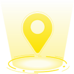
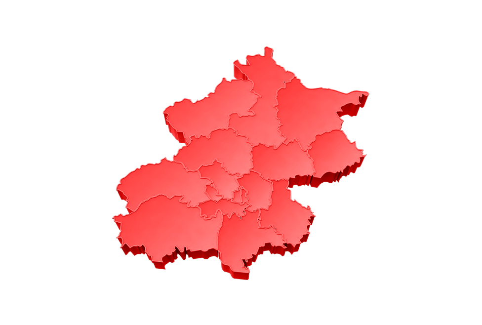
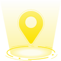
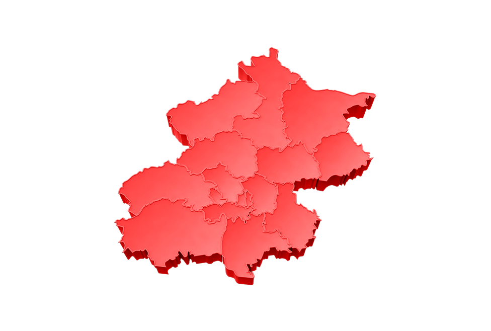

党建大数据
党委简介
总支简介
支部简介
党委名称：{{zb_name}}
总支名称：{{zb_name}}
支部名称：{{zb_name}}
上级组织：{{zb_p_name}}
通讯地址：{{zb_address}}
支部书记：{{zb_shuji}}
支部副书记：{{zb_fshuji}}
支部委员：{{zb_weiyuan}}
组织类型：{{zb_organ_class}}
联系人：{{zb_head_name}}
联系电话：{{zb_head_phone}}
组织机构
{{item.dw}}
{{openWord}}
年份：
{{yearWords}}
月份：
{{monthWords}}
{{item}}
{{item}}
{{openWord}}
{{fcDetialwrap.title}}
时间：{{toNumber(fcDetialwrap.h_stime)}}
所属党组织：{{fcDetialwrap.gu_name}}
暂无活动记录
党员总数
 



党员年龄分布
党员性别比例
男：{{parseInt(man*100)}}%
女：{{parseInt(Math.ceil(woman*100))}}%
党员学历分布
党员干部比例

正式党员数量
{{dynumber}}
党委支部数量
{{zb_count}}
活动数量统计
{{activenumber}}
学习课时统计
{{studyTime}}
发展党员数量
{{developnumber}}
学习资源数量
{{resources}}
题库试题数量
{{testnumber}}
发展党员情况
参与活动情况
党费缴纳情况
星级评定
班子建设
{{starWrap.score[0]}}
党员教育
{{starWrap.score[1]}}
组织生活
{{starWrap.score[2]}}
党委评分
{{starWrap.score[3]}}
{{starWrap.star}}
五星级
四星级
三星级
党员风采
更多
暂无数据
支部风采
更多
暂无数据
各支部会议记录
更多
序号
主题
时间
{{index+1}}
{{item.hy_title}}
{{toNumber(item.h_stime)}}
暂无数据